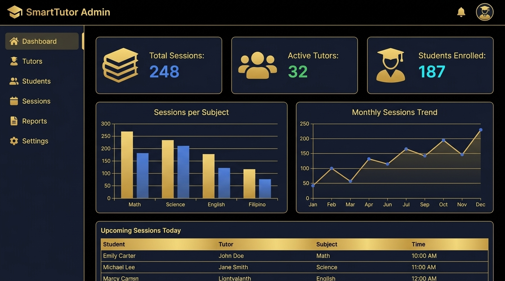
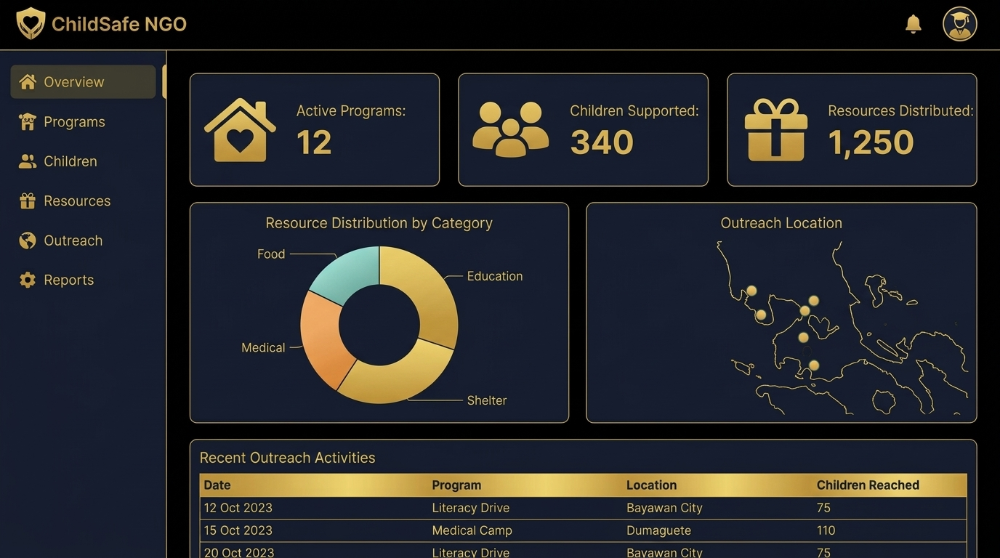
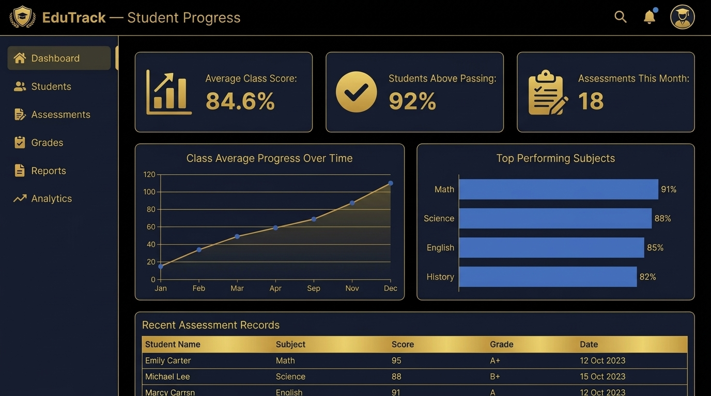
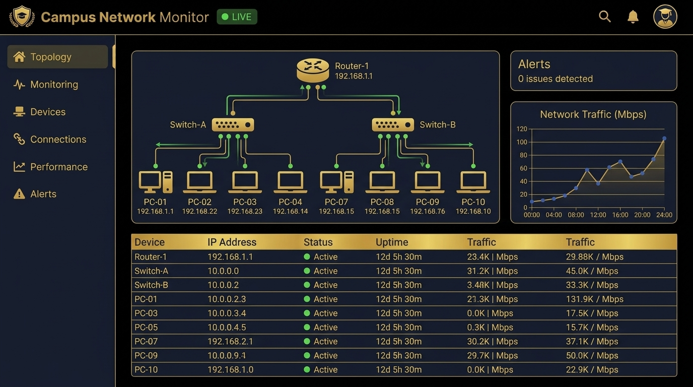

My Academic & Personal Works
Projects

Tutoring System & Student Analytics Platform
A web-based tutoring management system designed to connect students with qualified tutors. Features schedule management, student progress reporting, and backend MySQL database logging to analyze session frequency and subject demand.
Technologies:
MySQL, PHP, HTML, CSS, JavaScript, Excel

NGO Child Protection Resource Database
A relational database project developed to assist non-governmental organizations in tracking child advocacy programs, outreach schedules, and protection resource distributions efficiently.
Technologies:
MySQL, PHP, HTML, Documentation & Research

Student Academic Progress Tracking System
A database-driven web application that helps instructors and tutors record assessment scores, generate performance summaries, and track academic milestone trends using structured queries.
Technologies:
MySQL, PHP, HTML, CSS, Excel

Hybrid Network Topology Simulations (Cisco Packet Tracer)
A series of advanced hybrid network topology simulations designed and configured in Cisco Packet Tracer. Each project integrates multiple topology structures to demonstrate redundancy, scalability, and multi-path routing across campus-style networks.
Simulations Completed:
• Hybrid Topology (Tree + Star)
• Hybrid Topology (Ring + Bus + Star)
• Hybrid Topology (Partial Mesh + Tree + Star + Bus)
Technologies:
Cisco Packet Tracer, Network Documentation